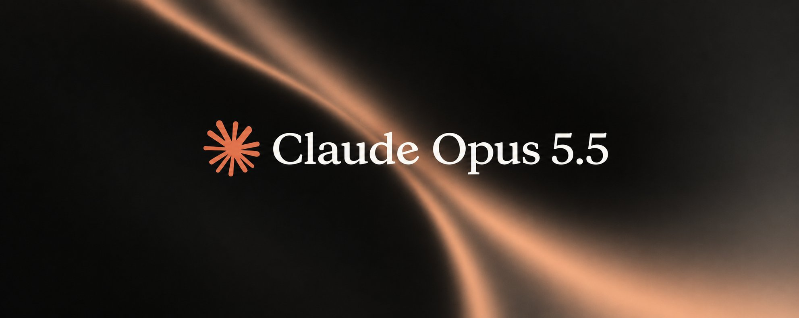
这是一篇我原本不打算发的文章。这是你能找到的关于「用 AI 做 SEO」最深入的一门课程（而且我全部免费分享）。
TLDR：
- 如何挑出能带来收入的关键词。
- 做出比前三名更好的页面。
- 赚取外链：先免费，最后才花钱。
- 让别人点你的名，这样 ChatGPT 才会引用你。
- 每周重复一遍——因为顺序比任何单一技巧都重要。
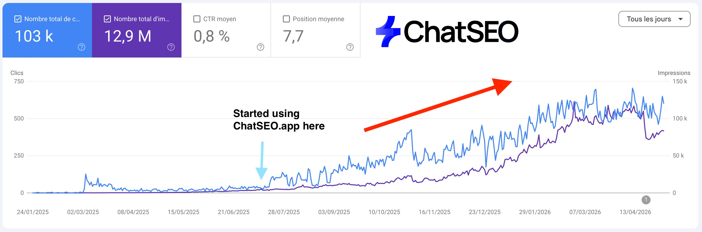
于是我把自己发表过的所有内容拿出来，删掉过时的，修正我当初搞错的，再按我们实际执行的顺序排好。
最后一件事：如果你希望我继续写这类内容，我需要你的支持。点个赞、引用或收藏，都能帮我继续写下去 🙏
回到课程 🔥
开始之前：AI 能为你的 SEO 做什么、不能做什么
AI 不知道你的搜索量，也不知道你的排名。
问 Claude 该瞄准哪个关键词，它会根据训练数据去猜。问它你的网站排第几，它不可能知道。一切建立在猜测之上的下游工作，也都是猜测。
Claude 擅长的：
- 阅读 Search Console 导出数据，找出你会漏掉的规律
- 按同一个结构写 30 个页面而不跑偏
- 给你拥有的每一个旧页面加内链——没有人会愿意做第二遍
- 批量编写结构化数据、标题和 meta 描述
- 每周一跑同一套检查，从不忘记
它自己无法知道的：
- 搜索量和关键词难度
- 你的排名、点击和展示
- Google 今天在结果页上展示了什么
- 哪些竞争对手页面正在抢走你的流量
所以工作一分为三：
- Claude 是双手。有代码仓库就用 Claude Code 里的 Opus 5.5；没有就用 Claude Project 里的 Sonnet 5.5。它负责规划、写作、编辑、执行例行任务。
- ChatSEO 是大脑。通过它的 MCP，它带来你的 Search Console、关键词搜索量、实时 SERP、抓取到源码级别的竞品页面，以及一套照着顾问真实工作方式搭建的流程。
- 你负责审批。任何会触及线上页面、或以你的名义发出去的东西。
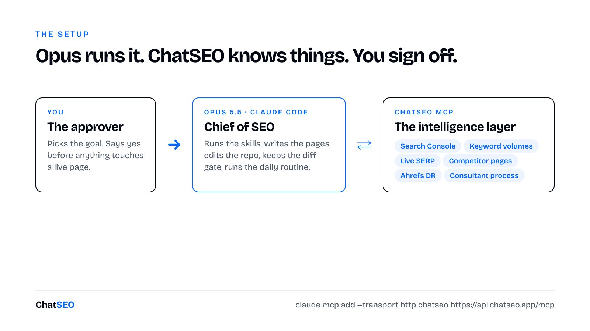
设置只需五分钟。注册 ChatSEO 账号，添加你的网站，连接 Search Console。跳过最后一步，后面一半内容都等于盲跑。然后在终端里：
claude mcp add --transport http chatseo https://api.chatseo.app/mcp打开 Claude Code，输入 /mcp 登录一次。如果用 Claude 应用，则把 https://api.chatseo.app/mcp 添加为 connector（MCP 属于 Pro 方案）。
下文凡是写着「Using ChatSEO（用 ChatSEO）」的提示词，都默认已建立这个连接。写着「skill」的是文件：把它们保存为仓库里的 .claude/skills/<name>/SKILL.md，Claude Code 就会自动加载。
进入第一部分之前还有一件事。
GEO 不是做完 SEO 之后才开始的另一门学科。当 ChatGPT 不知道答案时，它会去搜 Google。如果你没有 SEO，模型就找不到任何关于你的东西。
→ 好的 GEO 先要有出色的 SEO。这就是为什么 GEO 是第四部分，而不是第一部分。
第一部分：动笔之前先选「钱」
大多数 SEO 流量都是虚荣流量。
「什么是 SEO」「CBD 的好处」。你的 Search Console 曲线往上走，你感觉很棒，然后没有人买单。
我的联合创始人 Paul 说得很直白：这些流量是为了你的自尊，还是为了你的生意？
模块 1：瞄准「卡已在手」的人
头六个月里唯一值得做的关键词，是那些搜索者已经把信用卡拿在手里的词。
「SEO consultant Paris（巴黎 SEO 顾问）」「Coffee table（咖啡桌）」「Shopify SEO agency」「Alternative to Mangools（Mangools 替代品）」。
判断搜索意图不需要工具，Google 已经帮你测试过了。输入关键词，看看排在前面的是什么。
- 博客文章、顶部有定义框：信息型。暂时跳过。
- 落地页、服务页、带价格的分类页：商业型。这才是你的目标。
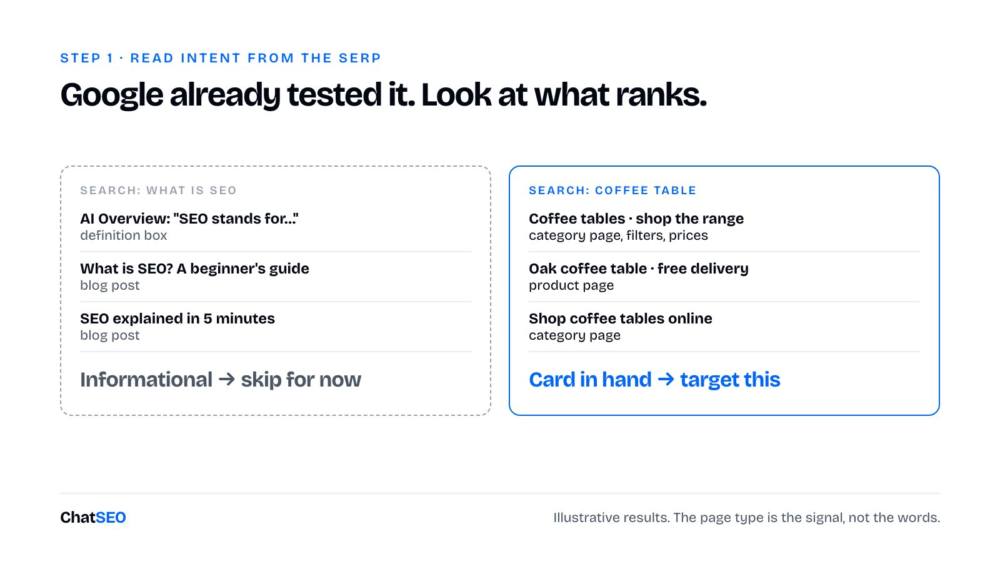
低搜索量不是入场的代价。「[竞品] alternative」也许每月只有 90 次搜索，但这 90 个人今天都在找替代品。
模块 2：一个关键词给你一个页面，一个模式给你一台机器
模式（pattern）是一组意图完全相同的关键词，Google 每次返回的都是同一类页面，只有一个词在变。
- 「[工具 A] vs [工具 B]」
- 「Best SEO tool for [ecommerce]（最适合[电商]的 SEO 工具）」
- 「SEO consultant [城市]」
- 「[服务] [城市]」
- 「[产品类型] [材质]」
一个模式就是几十个页面。你再也不用选题，只需要做下一行。
免费的找法是 Google Suggest。输入你的种子词，然后在末尾加 *，再在开头加。每种都会冒出不同的一批。Google Ads 的关键词规划师可以补上搜索量。
快速的方法是让 Claude 去问「分析师」。
---
name: money-keywords
description: 为本站找出商业型关键词模式。当被问到该瞄准哪些关键词、SEO 策略或「钱在哪里」时使用。
---
1. 调用 ChatSEO list_sites，选出本站的 ID。
2. 向 ChatSEO 发送（send_message，带 siteId），逐字照发：
"Give me the best SEO strategy for my site. Group the opportunities
by keyword pattern, and only keep the ones with commercial intent.
Rank the patterns by how realistic they are for a site with my
authority."
（给我这个网站最好的 SEO 策略。按关键词模式分组，只保留商业意图的机会，
并按「以我这个权威度的网站有多现实」排序。）
3. 轮询 get_conversation_messages，直到回复完成。
4. 对每个模式，只保留当前前三名是落地页、服务页、分类页或产品页的关键词。
凡是博客文章占主导的一律丢弃。
5. 写入 keywords.md：模式、关键词、月搜索量、Google 排名的页面类型、
我们是否已有对应 URL。
6. 绝不编造搜索量。ChatSEO 没给的，写 "n/a"。第 6 步是有原因的。Claude 会很乐意用一个看似合理的数字填满空白列。分析师的存在，就是为了让它永远不必这样做。
模块 3：如果你卖软件，有 9 种页面类型，按这个顺序写
顺序依据是意图强弱和 SERP 的难度。
- 替代品页。X 的替代品、X 的免费替代品、X 的便宜替代品。列表里意图最强的。没有公司会写一个帮你离开它的页面，所以在位者无法竞争。先写这些。
- 对比页。X vs Y、X 还是 Y、X vs Y vs Z。两家厂商加一堆联盟营销内容，就是全部竞争者。对你输掉的那几行要诚实——这是让其余内容可信的唯一办法。
- 集成页。你的工具 + Slack、+ Stripe、+ Shopify。你借用的是别人品牌的搜索量，而且几乎没人跟你抢。十二个集成就是十二个页面。
- 约束页。无需订阅、无需信用卡、开源。二元筛选，不是观点。满足这个约束，你就直接赢下这个页面；不满足，就别写。
- 定价页。人们在搜产品之前先搜价格。目录类网站已经占据了大多数这类词，所以等你有了一定权威再做。
- 用例页。用来获客的工具、自动化开发客户的工具。你排的是「任务」而不是「品类」。见效较慢。
- 问题页。读者还不知道你的品类存在。竞争弱、意图低，但六个月后会有真实回报。
- 功能页。只写你真正领先的功能。否则你就是在为自己发布一条目录条目。
- 公司规模页。面向自由职业者、面向中小企业。这类我基本会跳过。它们几乎总是同一个页面换三个词，而 Google 对这种模式有专门的叫法。
本地商家？你的模式是「[服务] [城市]」和「[品类] [城市]」。第二部分有完整的本地体系。
模块 4：挑你真正能赢的 SERP
大多数新手把头几个月耗在根本排不上的关键词上。
两道过滤，第一道就能毙掉大多数项目：
- 以你当前的权威，这个 SERP 是可以打败的。我们刚起步时排不上「Semrush alternative」，竞争太激烈。Versus 类 SERP 更薄弱，而且读者已经拿着卡在比较工具了。这个取舍是有意为之的。
- 意图是商业型。见模块 1。
在年轻的网站上，要做小而具体的词。奥斯汀的水管工不该从「plumber Austin」开始。下面那一串才是你先赢的地方：「emergency plumber Round Rock（Round Rock 紧急水管工）」「water heater repair Cedar Park（Cedar Park 热水器维修）」。郊区的收费和市中心一样。
让我们损失了头几个月的错误
在 ChatSEO 之前，Paul 和我做过一个商业计划书生成器。
SEO 机会是真实的。成千上万条程序化查询，低竞争，明显的购买意图。
于是我们快速上线、快速发布。
它从来没有排上去。不是慢，是从来没有。
问题不在页面本身。一个全新域名、零品牌搜索、零外链，再加上一个看起来和 Google 归档为「批量生成」的每个网站一模一样的发布速度。
→ 我们是无名之辈，却高调登场。Google 没有理由花抓取预算去确认我们是不是例外。
第二到第五部分的一切，都是为了让你不重蹈覆辙。
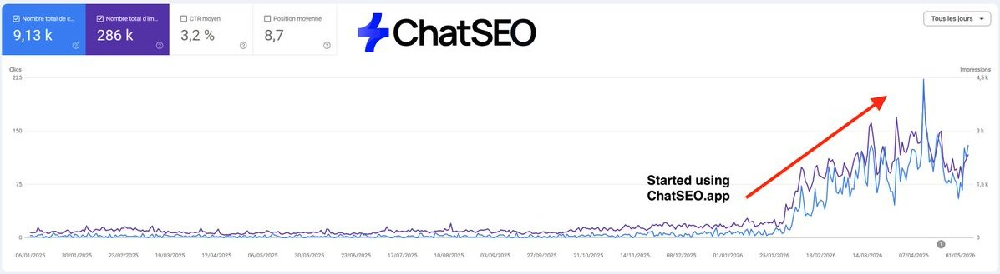
第二部分：做出配得上排名的页面
最昂贵的 SEO 错误，是写了一个你本来就有的页面。
第二昂贵的，是写了一个相对已有的九个结果毫无增量的页面。
模块 5：一个关键词，一个页面。动笔之前先决定
这是 Paul 手动做的检查：Search Console → 效果（Performance）→ 按精确查询筛选 → 然后看「网页」标签。
- 已有页面为它带来点击：优化那个页面。
- 有页面有展示但点击很少：它已经在前 10 名某处了。优化它。
- 什么都没有：新建页面。
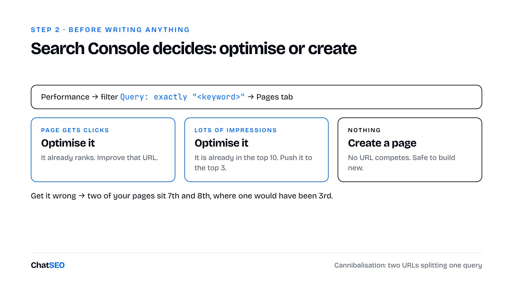
弄错了，你就制造了关键词蚕食：你的两个页面争夺同一个查询，Google 无从选择。Paul 举的例子：两个页面分别排第 7 和第 8，而只有一个页面的话本可以排第 3。
接下来是大多数顾问跳过的部分：次要关键词。拿你这个关键词排第一的那个 URL，列出它进入前 5 的所有其他查询。这份清单，就是 Google 已经认定属于「同一个页面」的东西。用一个 URL 把它们全部覆盖。
这一切最终都落在标题上。
标题是页面的身份证，是你手里最强的页面内元素。一个词就能决定一个页面排一个查询还是五个查询。「SEO Consultant Paris (Freelance)」一次覆盖了两个模式。如果还有剩余像素，就用来争取点击。
meta 描述几乎不影响排名。它的工作是把点击卖出去。
---
name: page-brief
description: 为一个目标关键词生成 SEO brief。当被要求为某关键词做排名、优化页面，或新建任何页面之前使用。
---
1. 向 ChatSEO 发送（send_message，带 siteId），逐字照发：
"I want to rank first on <keyword>. Read the live top 10. Tell me
which page type wins, which secondary keywords the top 3 also rank
for, and whether I should optimise an existing page or create a new
one. Then give me the full brief."
（我想在 <关键词> 上排第一。读一下实时前 10 名，告诉我哪种页面类型胜出、
前 3 名还在哪些次要关键词上有排名、我应该优化现有页面还是新建页面，
然后给我完整的 brief。）
2. 轮询直到完成。提取：新建还是优化、对应哪个 URL；主关键词与次要关键词；
前 3 名都具备的章节；建议的标题和 meta 描述。
3. 如果已有 URL 已经为该关键词获得点击或展示，停止任何新建页面的计划。我们做优化。
4. 检查标题包含主关键词，且在 SERP 预览中不会被截断。
5. 把 brief 保存为 briefs/<keyword-slug>.md。先不要改动网站。当 Paul 在他里昂顾问页面上现场跑这套流程时，ChatSEO 标记出了一个他从未注意到的 canonical 标签。他从 2021 年就开始做 SEO。这就是「分析师」存在的意义。
模块 6：做出前三名「差一点就做到」的东西，再加一样他们没有的
打开前三名，把自己放进搜索者的脑子里。
输入「SEO consultant Paris」的人想知道：为什么选你、多少钱、怎么合作、多久见效。按 SERP 回答它们的顺序把这些问题答完，你就和他们打平了。
然后做得更好。Paul 拆解过一个排第一的竞争对手：没有你将要雇用的那个人的照片，也没有让访客自我判断是否合适的方式。加上这张脸，加上一个三题小测验。
最后这部分不是装饰，而是你的反垃圾防线。
2024 年 3 月，Google 在其垃圾政策中加入了「规模化内容滥用（scaled content abuse）」，措辞很关键：无论内容来自自动化、人工还是两者混合，它都适用。它针对的是大量、对读者几乎没有或完全没有价值的非原创内容。
→ 数量不是违规，非原创才是。
Google 关于 AI 内容的指南从另一面说了同样的话：他们「关注内容的质量，而非内容是如何产出的」。
所以对每个页面只问一个问题：这里有什么是另外九个结果没有的？
- 一个把访客引导到正确答案的小测验
- 一个计算器或模拟器
- 你自己的数据，或者一张你真正拉取过数字的表格
- 真实照片：工作现场、团队、地点
- 视频
每个页面至少有其中一样，否则就别发布这个页面。
其余的页面内优化大多是噪音：
- 一个包含主关键词的 H1。H2 和 H3 的结构会自然形成。
- 结构化数据。发布时给 Claude 一条指令就行。代理公司讨厌这活，因为一半字段只有页面上线后才存在：最终 URL、发布日期、作者。而 Claude 负责发布页面，所以这些它全都有。
- 内链是门槛，不是杠杆。Google 通过跟随从首页出发的每一个链接来发现页面。没有任何链接指向的页面几乎等于不存在。Paul 的底线是：每个新页面至少 5 条内链，来自主题相近的页面，放在正文里。
→ 句子里的链接告诉 Google 下一个页面讲什么；菜单里的链接什么也没告诉它。
模块 7：给 Claude 一个模板和一份流程文件，而不是一条提示词
放任不管的话，Claude 会交出白底黑字的页面。
技术上，那确实是个页面。
第 1 步：把一个你本来就喜欢的页面重建为模板
打开你自己网站上的一个页面，查看源码，粘贴进 Claude Code：
Rebuild this page as the template for every SEO page on this site:
same design, title pattern, meta description, H1, FAQ block,
interactive element and CTA placement. Save it and use it for every
new page.
（把这个页面重建为本站所有 SEO 页面的模板：相同的设计、标题模式、meta 描述、
H1、FAQ 区块、交互元素和 CTA 位置。保存下来，每个新页面都用它。）第一次一次成型，之后修两三处。哪怕页面是用 Elementor 搭的也行。底层全是代码，而 Claude 读得懂代码。
第 2 步：把 SEO 流程写成文件
一个 Claude 在每个页面之前都会读的 markdown 文件。每条规则两行就够了。我们的：
SEO 流程：每个页面之前必读
- 基于模板构建。绝不自创版式。
- 为新页面添加至少 5 条内链，来自相关页面的正文，
锚文本与新页面的目标关键词一致。
- 翻译成法语，并用 hreflang 关联两个版本。
- 添加与页面实际内容相匹配的结构化数据。
- 每次发布都更新 sitemap。
- 在 Search Console 中请求编入索引。真正带来回报的是内链那条规则。Claude 能打开你拥有的每一个页面，包括老页面，自己把链接加上。人类从来做不到持之以恒。我自己当然也没做到。
sitemap 陷阱
一旦你让 Claude 来发布，你就离开了你的 CMS。
Paul 是吃了亏才发现的。他在测试 ChatSEO 一个读取网站 sitemap 的功能，结果它一直忽略他前一天发布的某个页面。页面是上线了的，但自从他不再依赖插件之后，sitemap 就再没动过。
没有任何警告。你的网站只是悄悄地不再告诉 Google 有哪些东西存在。这就是为什么「更新 sitemap」写进了文件里。
Claude 删掉了唯一重要的东西的那一天
我们让 Claude Code 把一个对比页复制成针对四个新竞品的版本。
一切都迁移过来了：标题、meta 描述、结构化数据、目录、法英双语版本。
小测验没了。两个页面都没了。没有报错，没有警告，输出里什么都没提。
小测验是唯一的原创元素——恰恰是规模化内容政策所针对的那个东西。
后来这事也发生在 Paul 身上。Claude 重写了他的城市页面，把「最佳 SEO 顾问」排名表弄丢了。他是在录播客时现场发现的。
一个能编辑你网站的 agent，可以悄无声息地删掉这个页面存在的唯一理由。所以我们的发布 skill 里有一道闸门。
---
name: ship-page
description: 根据 brief 编写或更新页面并安全发布。在 page-brief 之后、被要求构建/重写/发布页面时使用。
---
1. 读取 briefs/<keyword-slug>.md。基于模板编写或重写页面，覆盖前 3 名共有的每个章节，
再加一样他们没有的东西（测验、计算器、照片、真实数字、视频）。
2. 一个包含主关键词的 H1。标题和 meta 取自 brief。
3. 遵循 SEO 流程文件。
4. DIFF 闸门。发布前，列出旧版本（或参考页面）中存在、而新版本中缺失的每个元素：
表格、排名、表单、测验、嵌入、图片、内链。把这份清单给我看。
如果清单不为空，在第一行就说明。
5. 只有在我说 yes 之后才发布。先草稿或分支，绝不直接上线。第 4 步就是全部的教训。它什么都没拦下的那一天，就是你不再需要它的那一天——而那一天不会到来。
模块 8：复制模式，慢慢来
一旦某个模式里的一个页面做对了，接下来的四十个就是同一个页面。
「顾问 + 里昂」和「顾问 + 里尔」意图相同。所以你手工做好第一个页面，花满一小时，再从它复制。
你即将把这个页面乘以二十，每一个弱点也会随之倍增。
陷阱是：一个只改了城市名、其他什么都没变的页面。那就是一个模板加一次查找替换。Google 的垃圾政策称之为「门页滥用（doorway abuse）」，其示例字面上就是「针对特定地区或城市、把用户导向同一个页面的页面」。每个变体都需要一些只有它能说的内容：城市情况、价格、案例、客户评价。
节奏就是策略
我们的博客靠一句话运行，每周两次：
Take the last article we published, and do the next keyword in the
pattern.
（拿我们发布的上一篇文章，做这个模式里的下一个关键词。）Claude Code 检查哪些变体已存在，挑出下一个，从 ChatSEO 拿到 brief 和文章，基于模板构建、翻译、加链接、更新 sitemap，并请求 Google 收录。
英文 2 篇、法文 2 篇，每周四个页面。每一篇上线前都有人读过。
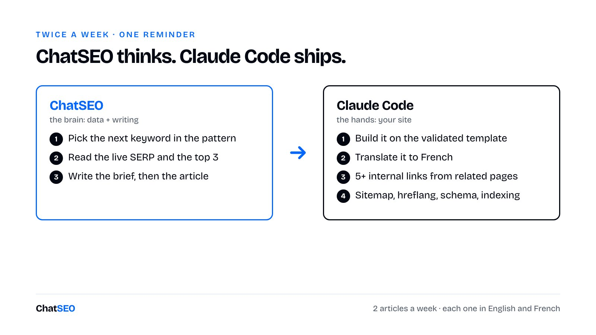
一年前，ChatSEO 博客从 Google 获得的访问几乎为零。如今每月大约 3,000。
曲线并非一条直线。春天时涨到约 1,500，然后跌了一半，再回到 3,000。我们自始至终保持每周 2 篇。
→ 一个周一发 30 页、然后一个月什么都不发的网站，看起来像内容轰炸；一个一年里每周发 2 页的网站，看起来像一支编辑团队。
如果我是 Google，想把编辑团队和内容轰炸者区分开来，发布频率的波动就是我会看的第一个指标。选一个数字，守住它。在新网站上，一天一页是上限。
做多语言
那一小时已经花了。第二种语言几乎不花成本。
先检查你的域名。在 .fr、.de 或 .co.uk 上，无论实现多干净，你都不是在做多语言 SEO。Paul 在他的 .fr 上测过——国家域名这个信号太强了。用 .com 加子目录。
然后两项检查：语言切换器要跳到对应语言的等价 URL，而不是首页；html lang 和 hreflang 要正确。hreflang 弄错的话，你的两个版本会互相竞争，而不是覆盖两个市场。
模块 9：发更多之前，先修好你已有的
最快的流量已经在你的网站上了。
在一个 50 页的博客上，我在三个月内把月点击从 1,500 做到 15,000，没有发布任何一篇新文章。三步，按这个顺序。
第 1 步：砍掉 15% 到 20% 的页面
那些放了好几个月没有点击、只是因为我觉得「应该发点东西」而写的页面。每一个都在稀释「这个网站是关于什么的」这一信号。
筛选条件：90 天内零点击且展示可忽略，排除最近三个月内发布的任何页面。新页面还没时间证明什么，砍掉它们是不耐烦。
Using ChatSEO, show me every page with zero clicks and under 50
impressions in the last 90 days, excluding anything published in the
last 3 months. For each one, tell me whether I should delete it,
merge it into another page, or rewrite it.
（用 ChatSEO，列出过去 90 天零点击且展示少于 50 的所有页面，排除最近 3 个月内发布的。
对每一个，告诉我应该删除、合并到另一个页面，还是重写。）第 2 步：把页面重新瞄准 Google 已经分配给它们的关键词
这一步带来的流量最多，而且几乎没人做。
对每个页面，看它实际在哪些查询上有展示。不是你写它时瞄准的关键词，而是 Google 判定它讲的那个关键词。在大多数页面上，这两者是不同的。
所以别再跟 Google 较劲了。每个页面改四处：
- 围绕新关键词重写 H1
- 围绕它重写 meta 描述
- 重写前 100 个词，让它自然且尽早出现
- 检查正文，确保页面真正回答了那个查询
最后一项是大家会跳过的。换了 H1 却让文章继续回答另一个问题，你只是把页面弄得更糟。
先做一项检查。高展示、低点击有两种原因，修法正好相反：
- 排名 8 到 15：触手可及。重新瞄准能把它推上去。
- 排名 1 到 3 而点击仍在下降：很可能是 AI 概览在你上方回答了这个查询。改标题解决不了。
Using ChatSEO, list the pages getting impressions for keywords they
are not optimised for. For each page: the keyword I targeted, the
keyword Google ranks it for, current position, CTR. Then give me the
new H1, meta description and first 100 words.
（用 ChatSEO，列出在未针对优化的关键词上获得展示的页面。每个页面给出：我瞄准的关键词、
Google 让它排名的关键词、当前排名、CTR。然后给我新的 H1、meta 描述和前 100 个词。）第 3 步：重组为主题筒仓（silo）
剩下的每个页面按主题分组，每组一个枢纽页，组内页面互相链接。一堆 40 个页面变成了四五个清晰的集群。
见效较慢。它是复利式的，而不是脉冲式的。
先砍，因为优化一个你将要删掉的页面毫无意义；再重新瞄准，因为这些页面已经有被验证的需求；最后重组，在干净的集合上进行。
永远不要让模型做不可逆的决定
Daniel Agrici 做了 Jev SEO，一个面向 Claude Code 的开源审计 skill。在他自己的评估文件里，模型两次建议删除有分量的文章。不是单薄页面，是真正的文章。
修复办法不是更好的提示词，而是一行代码：任何 600 词及以上的页面都禁止删除，无论模型怎么说。
→ 让模型去排序。让代码，或者你，握住删除的否决权。
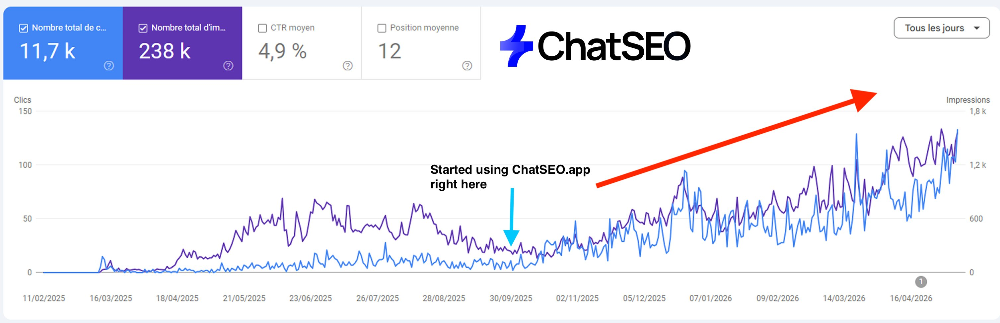
模块 10：如果你是本地商家，要排的是商家资料，而不是网站
本地 SEO 不是「在某个城市里做普通 SEO」。
当有人搜索「plumber Houston（休斯顿水管工）」时，Google 会在顶部显示一张带三个商家的地图。那些不是网站，而是 Google 商家资料（Google Business Profile）。第四名就等于第二页。没人会滚动地图。
Google 依据三个因素挑出这三个：
- 距离。搜索者离你的地址有多远。你改变不了。
- 相关性。Google 对你确实做这项服务有多大把握。靠内容填满。
- 权威性。整个网络有多信任你。靠链接填满。
大多数竞争对手三年前填过一次资料：一个类别，零项服务。他们忽视了自己唯一能控制的两个因素。
第 1 步：动手之前先测量
排名地图（rank map）会从覆盖你所在城市的一个网格点阵（常见 13×13）检查你的商家资料排在哪里。绿色是第 1 到 3 名，黄色是第 4 到 10 名，红色意味着 Google 不相信你在那里提供这项服务。
把它变成一个数字：你的 top-3%，也就是你排在第 1 到 3 名的网格点占比。第 4 名的价值为零。
Attached is a rank-map export for my Google Business Profile on
[KEYWORD]. Columns: point, latitude, longitude, position.
（附件是我的 Google 商家资料在 [关键词] 上的排名地图导出。列：点位、纬度、经度、排名。）
1. 计算我的 top-3%：排名 1 到 3 的点位数除以全部点位数。写出这个除法。
2. 描述绿色区域在哪里，哪个方向最弱。
3. 单独列出每一个排名 4 到 6 的点位。那些是最便宜的胜利。
4. 只使用文件里的数字。第 2 步：30 分钟商家资料审计
几乎每份资料上都有同样的三个错误：
- 只有一个类别。Google 允许最多 10 个。每多一个类别就打开另一组搜索。至少 2 到 4 个，每一个都要属实。
- 只有五项服务。你需要至少 20 项，在竞争激烈的城市要 30 到 40 项，每一项放在它所属的类别下。
- 空白栏位。描述写满 750 字符，至少 20 张照片，勾选所有属性，每周发一条动态。
这正是 Sonnet 会出错的地方，而且是悄悄地出错。冷启动让它给出类别，它给你的十个里有几个在 Google 的列表里根本不存在——语气和真实类别一样笃定。
解决办法：绝不让它凭记忆挑选。拿到真实列表（GMB Everywhere 这个 Chrome 扩展能显示竞争对手用了哪些），粘贴进去，然后：
Here is the full list of Google Business Profile categories: [PASTE].
Here are the categories my top 3 competitors use: [PASTE].
（这是 Google 商家资料的完整类别列表：[粘贴]。这是我前 3 名竞争对手使用的类别：[粘贴]。）
1. 为我的业务挑选 1 个主类别和 2 到 9 个次类别。
只能从上面的列表里选，拼写完全一致。
2. 每个类别用一行说明它能打开哪些搜索。
3. 拒绝任何描述了我不提供的服务的类别。
4. 如果列表里没有合适的，直说。不要编造类别。然后是评价。评价的文字很重要。一条写着「当天在奥斯汀修好了我们的热水器」的五星评价，比十条「服务很好」告诉 Google 的更多。请客户写评价时，请他们提一下你做了什么。
第 3 步：你的商家资料指向的那个页面
对大多数单店商家来说，那就是首页。七项检查：
- Title 标签：主类别 + 城市
- H1：主类别 + 城市
- 嵌入你商家资料的 Google 地图
- 把你的次类别作为 H2
- 展示你 Google 评价的小组件
- 地址，与资料上逐字一致
- 电话号码，逐字一致
大多数本地商家首页的标题是「Home」。那是白送的地盘。
第 4 步：Core 30
你的网站逐页镜像你的商家资料。3 到 4 个类别、25 到 30 项服务，大约给你 30 个页面：一个首页，每个类别一页（「drainage service Houston」），每项服务一页（「water heater replacement Houston」）。
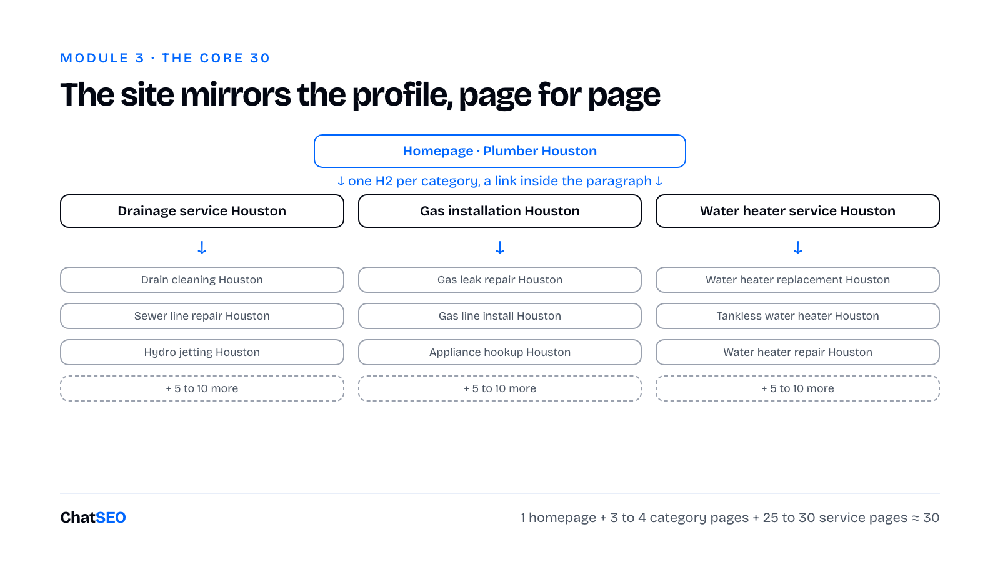
每一层都从段落内部向下链接。用从 ChatSEO 拉取的真实搜索量给这 30 个页面排序，最高的在前。那就是你的写作顺序。
第 5 步：让一个数字决定下一页
上线 30 天后，再对你的关键词做一次排名地图，然后对主导这个词的 3 到 4 家商家也做一次。领先者的 top-3% 就是你的天花板。你的阈值是它的 25% 到 50%。
- 低于阈值：Google 还不相信你是专家。做主题性页面，回答客户会问的问题。
- 达到或高于阈值：向外扩张。为你黄色区域里的地点做页面——Google 地图已经命名的街区和地标。
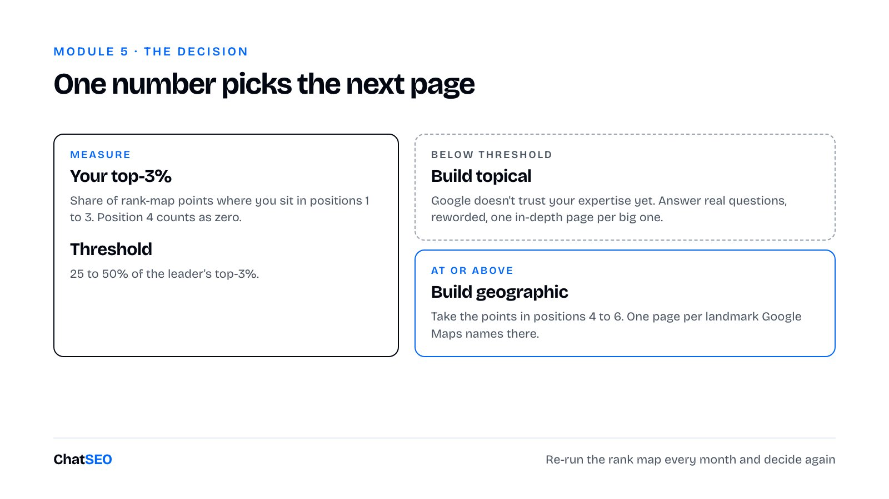
每个地点页要写这个地方，而不是写你：那里的住房情况、那里常见的问题、你的团队开车经过的路线。只换名字的页面，就是模块 8 里的门页模式。
第三部分：赢得权威
在弱域名上，一个完美的页面排第 40 名。第二部分里的任何东西都修不了这个。
Google 大约有六个月不会正眼看一个新网站。它没有理由去索引 Claude 一个下午就能生成的每一个网站。权威就是你越过这道坎的方式。
所有衡量权威的分数都是估算。Ahrefs 有 DR，Semrush 有 Authority Score，它们都不是 Google。有人曾忧心忡忡地告诉 Paul，他们的 DR 从 70 掉到了 65。他的回答：看你的 Search Console。点击更多了吗？在业务关键词上吗？那才是记分牌。
这是我们在 Ahrefs 里的情况。
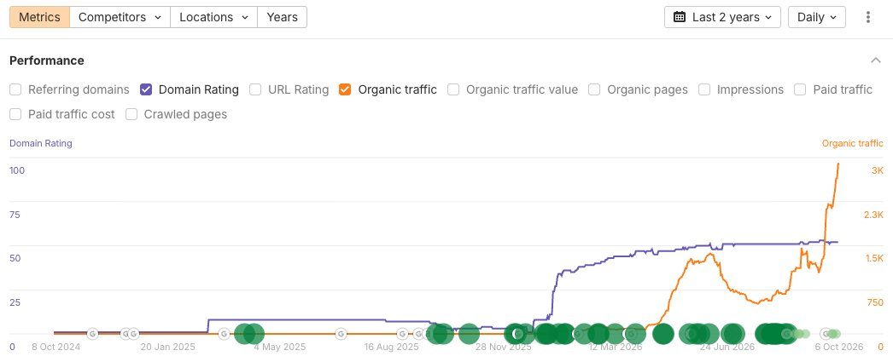
一年前域名评级（DR）不到 10，如今约 55。
到达那里有 13 种方法，分五个层级，从免费到付费。
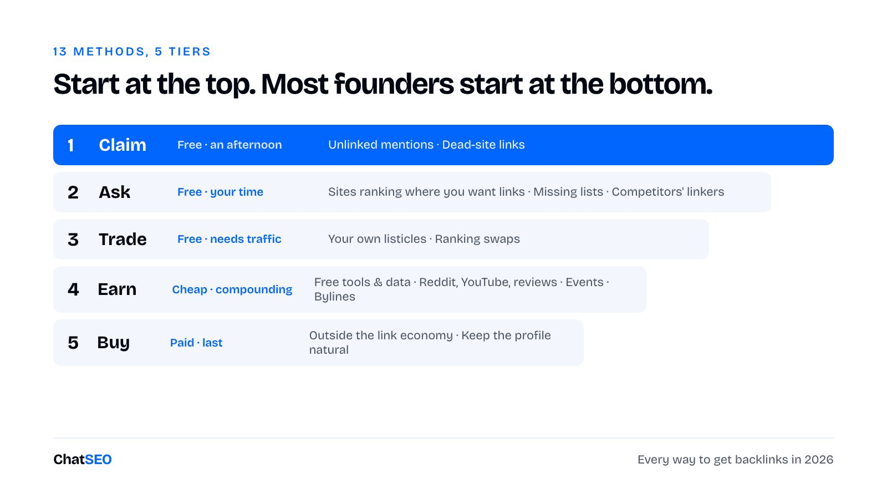
大多数创始人从底部开始。他们打开一个链接交易市场，付 50 欧元，然后纳闷为什么什么都没动。
从顶部开始。最便宜的链接，是没人能卖给你的那些。
模块 11：认领你已经赢得的链接
你不是在求人帮忙，而是在修正一处遗漏。
- 未加链接的提及。有人写了你的名字却没加链接：盘点文章、新闻通讯存档、论坛帖子、播客节目说明、「我们用的工具」页面。接受率很高，因为对方已经认定你值得一写。
- 指向死站的链接。找出你所在领域里域名已过期的网站，列出所有仍链接到它们的页面，给这些页面发邮件：这个链接失效了，这是一个可以替代它的页面。他们的页面目前在把读者送进 404，你是在帮他们修好它。
Axel，我们请上播客的一位「忍者式外链」顾问，是在自己被别人这样联系时发现第二种方法的。
我们用一条提示词同时找这两类：
Using ChatSEO: I would like to find free backlinks. Please tell me
what I should do.
（用 ChatSEO：我想找免费外链，请告诉我该怎么做。）模块 12：去要那些没人卖的链接
有一整类链接是任何交易市场都触及不到的。
给已经排在你想要位置上的网站发邮件
拿出你想从中获得链接的查询，看看谁在排名，从联系页面找到邮箱，发一封类似这样的邮件：
I liked your article on [topic]. We have one that complements it:
[URL]. Would you link to it?
（我很喜欢你关于[主题]的文章。我们有一篇可以与之互补：[URL]。你愿意链接它吗？）Axel 用这种方式从摄影师、本地商家、一个市政厅和一个省级（département）网站拿到了链接。这些都不出售——50 欧元不卖，5,000 欧元也不卖。这恰恰是这些链接有价值的原因。
请求加入你缺席的榜单
发送之前先过滤，否则就是垃圾邮件：
- 这篇文章在你在意的某个词上排进前 20
- 它在过去 12 个月内更新过
- 它已经收录了至少一个竞争对手
第三条最重要。作者已经认定你的品类属于这里。
Your list covers [what it covers] well. None of the [N] tools
[the thing yours does]. Here's a free account, no card.
Judge for yourself, and if it doesn't belong in the piece,
ignore this email.
（你的榜单把[它覆盖的内容]讲得很好。但其中 [N] 个工具都不[你的工具做的事]。
这是一个免费账号，无需绑卡。你自己判断，如果它不适合这篇文章，忽略这封邮件就好。）最差的结果是得到一次没有链接的提及。这不算浪费。ChatGPT 在有人问该用哪个工具时，读的正是这些盘点文章。第四部分就建立在这一点上。
挖走竞争对手的外链来源
任何同时链接你三个竞争对手的人，已经相信你的品类值得一个链接。
Using ChatSEO: find my 3 best competitors at my level, not the
industry giants. Analyse the backlinks they have, then find the
contact emails of the people linking to them. One table: site, page
linking, competitor linked, contact email. Never invent an email.
（用 ChatSEO：找出与我同一水平的 3 个最佳竞争对手，不要行业巨头。分析他们的外链，
然后找出链接他们的人的联系邮箱。一张表：网站、链接页面、被链接的竞争对手、联系邮箱。
绝不编造邮箱。）把这一切发出去的机器
- 线索。Claude 列出谁在排名、谁链接了竞争对手、谁提到过你。
- 邮箱。用 Instantly 这类发送工具，挂在一个相似域名上（绝不用你的主域名），预热约 20 天。
- 序列。一封邮件，几天后一次跟进，再一次跟进。足够了。
- 回复。Claude 每天读回复、分类、起草回信。你来批准。
Paul 的标准：每天五封邮件，天天如此。Axel 让 Claude Code 通过他的 Gmail 发送，每小时上限 10 封，只在工作时间。500 封邮件分三天发出，而不是一个下午。
→ 大多数外链合作死掉，是因为对方说了「好」，却一周没人回复。
模块 13：交换能让双方页面都变好的链接
一旦你有了能排名的页面，你就不用再求人了，别人会来找你。
发布你自己的榜单：你所在品类的最佳工具、在位者的替代品。诚实地把竞争对手也列进去。
一开始它们毫无作用。然后有几篇开始排名，局面就翻转了：你拥有一个有流量、别人想挤进去的页面。
然后就交换：你把他们列进你的榜单，他们把你列进他们的。
政策边界：Google 的链接垃圾政策把「过度的链接交换」列为垃圾行为。我用的测试是：如果这家公司对我毫无所求，我还会把它列进去吗？如果不会，就跳过。
几家本就该放在一起的企业之间的少量互换，是编辑决策；在一圈网站之间的五十个互惠链接，是足迹（footprint）。
模块 14：用值得引用的东西赢得链接
首页是不可引用的。作者需要一个具体的东西来链接。
按被复制的难度排序：
- 免费工具。不错，但竞争对手一周就能克隆。
- 信息图。只有底层统计数据是你自己的时才有效。
- 你自己的数据。没人能复制你的数字。还没有受众？先公开你的数字。
然后是你「直接发布」而非「去推销」的地方：
- Reddit、YouTube、Medium、LinkedIn 文章。它们借助你并不拥有的高权威域名排名。
- 一个评价平台。SaaS 和电商用 Trustpilot，本地商家用 Google 商家资料。一个强的资料胜过三个弱的。
- 活动。品牌办一场活动，本地媒体到场报道。Motoblouz 就是这样被 La Voix du Nord 等地区报纸报道的。不过媒体链接指向的是你的首页，推不动你需要排名的那个页面。两者你都需要。
- 署名文章。经营代理公司 SEO Monkey 的 Antoine 为 Les Echos Solutions 写了一年稿。陷阱是：署名依赖于某一个人。Paul 在 Journal du Net 的链接，在批准它们的那位编辑离职那天就停了。
我们从没为 ChatSEO 跑过外链活动。我们的 DR 正是来自这种足迹：Medium 上一篇赞助文章、一个 Reddit 帖子、某个权威网站上对这个工具的评测。
而在这一切之下是根基。人们写 ChatSEO，是因为有东西可写。一个连接 Search Console 并据此行动的 SEO agent 是个故事；又一个带聊天框的关键词工具，就没什么可说的。
→ 这一部分里的每种方法都是乘数。如果产品没给人们任何可说的东西，你就是在乘以零。
模块 15：最后才买，并且读懂「足迹」
先读政策。
Google 的链接垃圾政策规定：以付费换取传递排名权重的链接违反政策，买卖双方都算。合规的付费链接带有 rel="sponsored" 或 rel="nofollow"，而这恰恰去掉了你付钱想买的东西。
→ 任何向你兜售「安全的 dofollow 投放」的人，都是在给一项违规行为起一个让人安心的名字。
通常的结果不是惩罚，而是这个链接被打折扣，你等于白花钱。
我们买过一些。那是我们做过的最弱的事情，而且一停止付费，它们就不再产生复利。
如果你还是要买，就在链接经济之外买。如果一个网站能把链接卖给你，那这个链接就更不值钱。
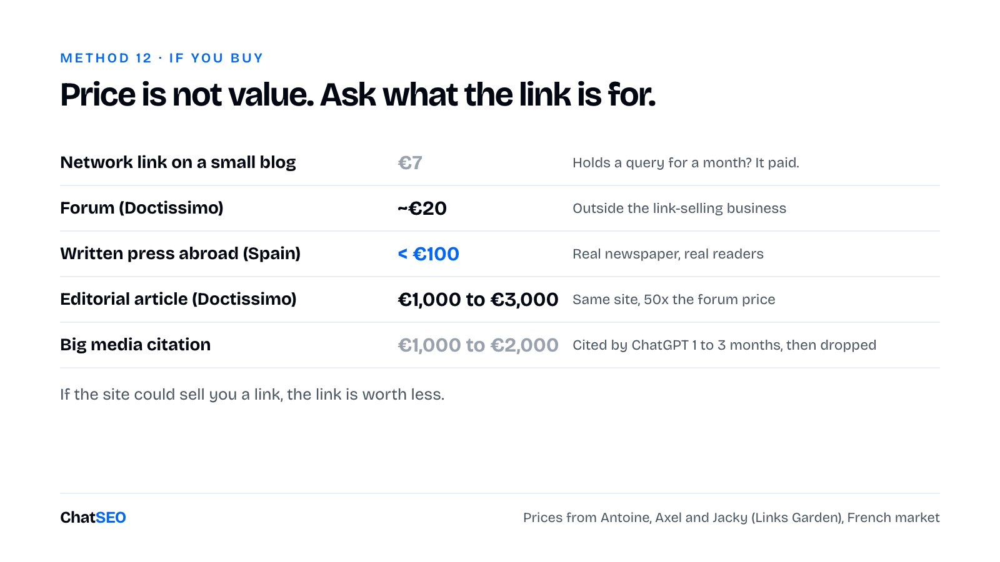
付钱前五项检查：
- 流量曲线。12 个月向右上走。在下降的话，你就是在它归零前夕买入。
- 真实、对口的流量。热门页面和关键词与你的相邻。
- 看页面，不看域名。DR 70 的网站上一个零访问的页面，几乎传递不了什么。
- 首页露馅。「精选文章」横跨十个毫不相干的类别，说明它的存在就是为了卖位置。
- 价格。50 欧元意味着已经有一百个人各付过 50 欧元了。
Google 不是在数你的链接，而是在读它的形状。
拉出你想要的 SERP。如果前三名每个只有两到四条外链，而你建了二十条，你不是比他们更努力，而是在大声宣告自己的存在。
来自 Axel 的、让外链画像看起来「人为搭建」的异常：
- 100% 精确匹配锚文本。来自外部的真实链接，锚文本是你的品牌名、你的 URL、「这里」「这个工具」。精确匹配只留给你最好的那几条链接。在你自己网站内部，精确匹配没问题。
- 单一顶级域名。一个双语网站只有 .com 链接，就一直困在法国，直到拿到 .fr 和 .org 链接。
- 100% WordPress。卖链接网站的默认技术栈。
- 零 nofollow。真实品牌会不经意地收到 nofollow 的论坛链接和垃圾链接。
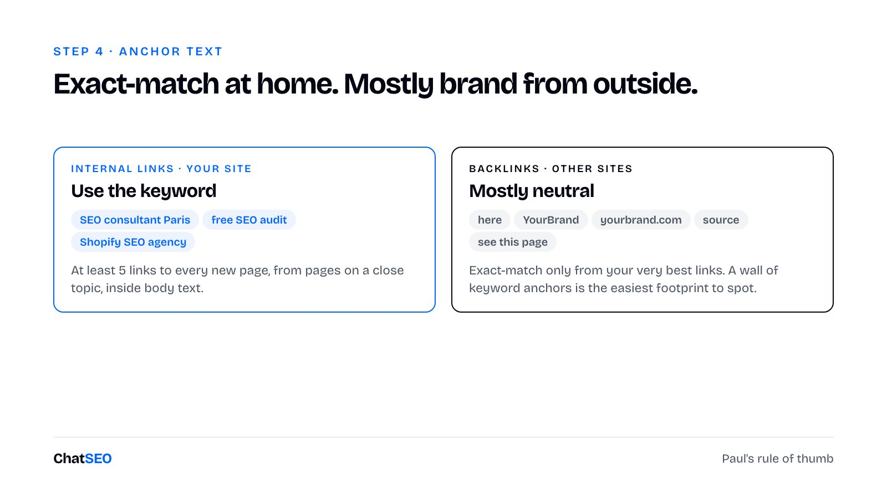
→ 一个过于干净的外链画像，本身就是异常。
没人会截图的那个数字
在我们的整个生命周期里，我们一共获得过 4K 条外链，来自 787 个引用域名。上次统计时，仍然存活的是 1.4K 条和 651 个。
我们赚到过的每一条链接里，大约三分之二已经消失了。没有任何人做错任何事。
无论你这个季度建了什么，都要按「明年还剩多少」来给它定价。
第四部分：在 Google 和 AI 会看的地方被别人点名
问 ChatGPT 法国最好的 SEO 顾问是谁。
Paul 在答案里。
来源却不是他的网站。
模块 16：瞄准 ChatGPT 输入的查询，而不是你的客户输入的提示词
你永远不会知道提示词是什么，但你可以知道它背后的搜索。
Jacky 经营法国外链平台 Links Garden。他的团队每个月把同样的 100 万条提示词输入 ChatGPT，在他上播客时已经持续了五个月：500 万个回答，每个回答中出现的品牌都被提取出来。
他的数据显示：
- 两类回答。带来源的，是 ChatGPT 搜索了网络；不带来源的，是它凭训练数据回答。
- 训练数据有滞后。网络与模型之间大约相差一年半。今年才上线的品牌不在里面。搜索是唯一的入口。
- 它搜的是 Google。它输入的内容与 Google 的排名高度相关。
- 来源会轮换。一条提示词随时间会用到约 50 个来源，每个回答 10 到 15 个，每月重新洗牌。
- 权威不是过滤条件。Jacky 发现一个只有 5 个引用域名的网站被引用了 200 次，而一个有 200 个引用域名的网站从未被引用。
最后一点是充满希望的。GEO 奖励的是出现在正确的页面上，而不是拥有最大的网站。
扇出（fan-out）
当 ChatGPT 决定搜索时，它会把对话改写成两到五条简短的 Google 查询。
Jacky 的例子：有人告诉 ChatGPT，他一个月前练柔道伤了背，看过医生，休息过，睡觉时还是疼。ChatGPT 搜的不是「柔道 医生 背痛 睡觉」，而是「best mattress back pain 2026（2026 最适合背痛的床垫）」。
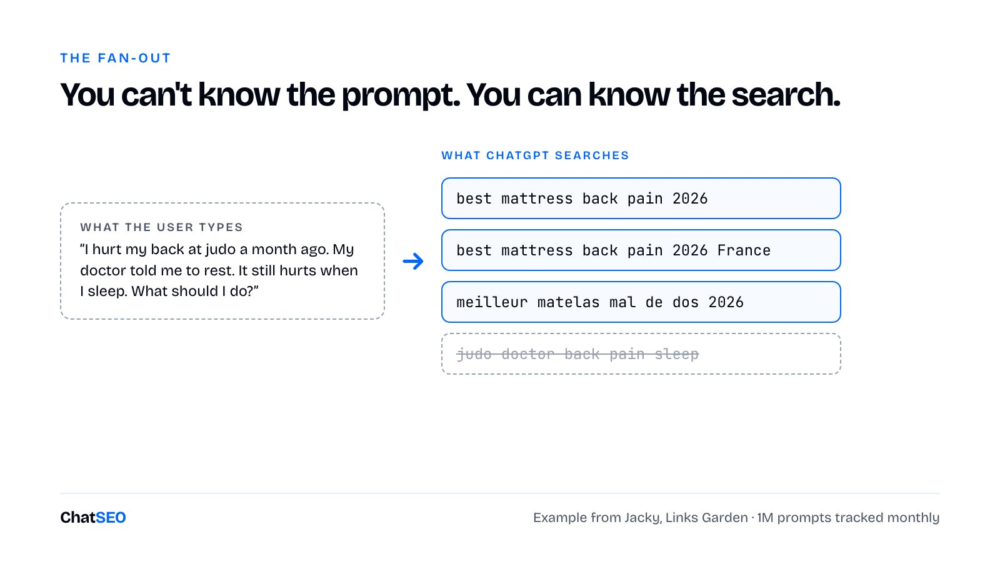
这击溃了对 GEO 的主要反对意见：「每条提示词都不一样。」扇出查询是收敛的。
它们呈现的形态：
- 「Best + 赚钱关键词 + 年份 + 国家」。大约一年来的主导模式。「Best」是因为用户想要推荐；年份是因为模型想要新鲜的来源。
- 两种语言。法语提示词会同时用法语和英语搜索。
- 「Reviews + 你的品牌」「alternative to + 你的竞争对手」。按 Antoine 的说法，这是最接近购买的查询族。
- 在权威域名上用
site:。较新的模式。在某些领域，现在有一到三条扇出查询直接指向政府网站和维基百科。
所以 GEO 的起点是一份关键词清单，由你在第一部分得到的赚钱关键词构建。
---
name: geo-queries
description: 构建 AI 助手为本站会搜索的查询列表。当被问到 GEO、ChatGPT 可见度或 AI 引用时使用。
---
1. 读取 keywords.md（来自 money-keywords）。
2. 对前 10 个商业型关键词，生成：
- "best <keyword> <当前年份>"
- "best <keyword> <当前年份> <国家>"
- 如果网站不是英文的，再生成上面两条的英文版
- 针对我们和前 3 名竞争对手的 "<brand> reviews"、"<brand> alternative"
3. 向 ChatSEO 逐条发送查询，逐字照发：
"Who ranks top 10 on <query>? Which of those pages are rankings,
listicles or review pages, and does my site appear in them?"
（谁在 <查询> 上排进前 10？其中哪些页面是排名榜、清单文或评测页？我的网站出现在里面吗？）
4. 写入 geo-queries.md：查询、前 10 名中的排名类页面、我们是否被列入、我们的位置、背后的域名。
5. 绝不编造搜索量或排名。留空胜过看似合理。第 4 步会成为第四部分其余内容的潜在合作清单。每一篇在扇出查询上有排名的榜单文，都是 ChatGPT 很可能会读的页面。
别在这上面浪费一周
Google 关于 AI 功能的文档说得很直白：「出现在 AI 概览或 AI 模式中没有额外要求，也不需要其他特殊优化。」你不需要新的机器可读文件、AI 文本文件或标记就能出现在那里。
所以如果你的 agent 提议来一次 llms.txt 冲刺，拒绝它。杠杆都是那些无聊的：被引擎已经在引用的页面引用；保持你自己页面上的事实是最新的、以文本形式呈现、可被抓取。
模块 17：别再把自己排第一
在你自己的排名里把自己放第一，曾经是最便宜的 GEO 技巧。
Paul 这么做了好几年。「巴黎最佳 SEO 顾问」，Paul 排第一，发在他自己的网站上。ChatGPT 引用了这个页面，也引用了他。
然后来源变了。
他仍然在答案里，但被引用的页面变成了别人的排名。
每个人都把自己排第一。模型已经学到了这一点，并对此打折扣。
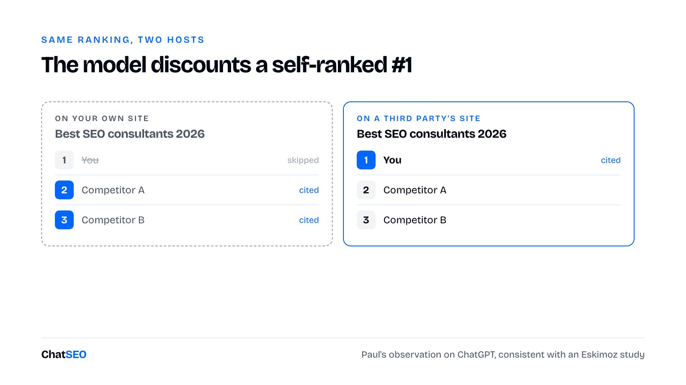
Paul 让 Claude 重写了所有他把自己排第一的排名：他的顾问网站、它的 .com 孪生站，以及 ChatSEO 博客（我们在那里把自己的工具排在了第一）。几个小时就烧掉了一天的 Claude 用量。
这是一种取舍，而不是规则：
- 对传统 Google 来说，自排第一的页面仍然可能赢。Paul 仍然看到像他那样的排名出现在结果的最顶端。
- 对 GEO 来说，它已经不能让你被点名了。
- 对你的读者来说，它会损害信任。
Paul 删掉了他的。如果你的排名页从 Google 带来客户，先测试，再决定是否全部重写。
---
name: self-rank-audit
description: 找出并修正我们把自己排第一的页面。
---
1. 列出标题或 H1 中包含 "best"、"top"、"ranking" 或年份的每个页面。
2. 对每个页面：排第一的是谁、是不是我们，以及该页面 90 天内的点击（来自 ChatSEO）。
3. 我们排第一且页面有点击：不要动。列出来，由我决定。
4. 我们排第一且页面没有点击：按实际优劣重写排名。我们可以留在榜单里，诚实地放在合适位置。
5. 使用 ship-page 的 diff 闸门。每次运行只处理一个页面。第 3 步保护你的收入。永远不要用一个能卖货的页面，去换一次可能得到的引用。
模块 18：让别人给你排名
别人网站上的一份排名，抵得过你自己网站上的十份。
一家餐厅说自己最好，谁都说服不了；一本巴黎指南把它排第一，就能。对模型也一样。
排名互换
Paul 做的代理公司排名给他带来了邮件，代理公司们想挤进去。他不收钱，只要一样回报：在他们自己的网站上发一份把他或 ChatSEO 列进去的排名。
Convertix 就是活生生的例子。他们发布了「法国最佳 SEO 顾问」「最佳 SEO MCP」；Paul 发布了「最佳 Google Ads 代理公司」「最佳 Meta Ads 代理公司」。
Paul 在一期播客上现场测试，在未登录状态下，ChatGPT 把他列为法国最佳 SEO 顾问之一，引用里的来源正是 Convertix 的排名。
让互换产生复利的两条规则：
- 时效性。每年刷新一次，标题里写上新的年份。
- 数量。Antoine 认为大多数企业至少有 20 个值得互换的查询。
你在互换中的那一半就是一个页面。像其他页面一样走 page-brief 和 ship-page。我们从不出现在我们自己品类的排名里。
阶梯
并非每次露出都是互换。Antoine 把其余的分成四级。
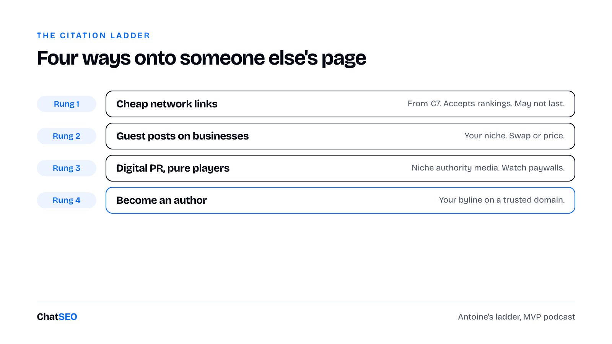
- 便宜的网络链接。会眼都不眨就发布一份排名的小博客。Antoine 的算法：如果一个 7 欧元的链接能让你的 GEO 查询撑一个月，它就回本了。
- 在企业网站上发客座文章。你所在领域里卖产品、而不是卖曝光的网站。
- 在纯线上媒体做数字公关。在某个细分领域有权威的纯线上媒体，先于任何全国性报纸。
- 成为作者。你的署名出现在模型信任的域名上。
便宜的引用并不更差
在你花钱买大媒体提及之前，把这段读两遍。
Jacky 看到客户花 1,000 到 2,000 欧元，在大媒体上买一次引用。它被引用一到三个月，然后掉出轮换。
一个 10 到 20 欧元的投放效果差不多。
→ 在引用这场游戏里，「PBN」这个标签吓到人的程度，远超吓到模型的程度。
模块 12 的外联机器负责把这些都发出去。同样的线索、同样的序列、同样的每天五封邮件。
模块 19：找出模型正在读的 Reddit 帖子
Reddit 一直被频繁引用。但在你投入一个季度之前，先看看你面对的是哪个引擎。
已发布的分析显示，Reddit 约占 Perplexity 头部来源的 46.7%，在 Gemini 上约为 3%。而在 Jacky 的法国 ChatGPT 数据中，Reddit 的占比在 7 月从约 30% 跌到 9%，8 月又跌到约 5%。
→ 被过度使用的东西就会被调低。模型在轮换。
如果你的买家所在的地方确实会引用 Reddit，方法如下。
第 1 步：写 10 条提示词，而不是 10 个关键词
买家在晚上 11 点烦躁时真正会输入的那句话。让 ChatGPT 给你 50 个你的客户会问的问题，挑 10 个。
「对独立创始人来说最便宜的 Ahrefs 替代品。」「如果我只有 20 个页面，值得为 SEO 工具付费吗？」
它们都不包含「SEO 软件」。买家描述的是他们的问题；营销人员描述的是品类。
第 2 步：在未登录状态下运行
已登录的账号会根据你的历史做个性化。你要的是陌生人得到的答案。
第 3 步：读来源，而不是读答案
点开来源，看模型是用什么拼出这个答案的。10 条提示词下来，你通常会找到四五个 Reddit 帖子。
如果某个竞争对手在其中三个里被引用，而你一个都没有，那不是内容问题，那就是全部问题。
第 4 步：把扇出也跑一遍
让模型列出它需要先回答的子问题。把这些也跑一遍，检查它们的来源。这些帖子竞争更少，因为没人会为一个自己看不见的查询做优化。
第 5 步：以本人身份评论
第一行就说明你是谁。「我做的就是这类工具之一（ChatSEO），所以请对我的话打个折。」
然后认真回答，包括你的产品在哪些情况下是错误选择。对于一个只有 20 个页面、还没有流量的网站，ChatSEO 通常就是错误选择。说出这一点对我毫无成本，而这正是这条评论能留存下来的原因。
每两三天一个帖子。不是一个下午十个。
选哪些子版块
不要按规模挑。挑那些 Google 已经让它们在你最佳关键词上排名的。
Using ChatSEO: find my 10 best traffic generating keywords. Then tell
me if a subreddit is ranking on each of these keywords. If so, give me
the URL of the subreddit.
（用 ChatSEO：找出我带来流量最多的 10 个关键词。然后告诉我每个关键词上是否有某个
subreddit 在排名。如果有，给我那个 subreddit 的 URL。）发任何推广内容之前先养号：10 点 karma，连续三天每天五条高质量评论，每次发帖前先读版规。
模块 20：你的域名只能拿 2 个位置，你的品牌可以拿 6 个
在能赚钱的关键词上，你的域名最多拿到两个结果位，再好的 SEO 也买不到第三个。
所以别再试图让页面排名了，去占领这个结果页。
在你的品类里输入一个对比类查询，数一数第一屏上有什么：一个视频包、一个 Reddit 帖子、一篇来自不在你品类里卖东西的网站的榜单文、一条 LinkedIn 帖子。
→ 按 SERP 上已经展示了多少「非网站」结果来给查询排序，而不是按有多少人搜索。
层次：
- 每个关键词一个视频。YouTube 在 Google 内部排名非常好。拍一次，被收录两次。评测类查询的标题格式：「{Tool} Review {Year}: Features, Pricing & Alternatives（{工具} 评测 {年份}：功能、价格与替代品）」。描述不是配文，而是 Google 会索引的文本。至少 200 词，前两行就回答这个查询。
- 每个视频剪三条 Shorts，对应三个不同的查询。再把同样的文件发到 TikTok，按人们在 TikTok 搜索里的输入方式重写文案。在我上一个消费类应用上，99.3% 的 TikTok 播放来自搜索，0% 来自「为你推荐」。
- 你想进入的那种榜单，发在 LinkedIn 或 X 上。被收录的帖子会排名。把第一行写成那个精确的查询。
- 在你永远排不过的那个帖子里留一条评论。附上身份披露。
然后是其余的足迹：
- 社交：你的细分领域决定平台。美妆和食品在 Instagram 和 TikTok；服务和 B2B 在 LinkedIn、X、Reddit；软件在 X、YouTube、GitHub、Reddit。最多三四个。
- 评价：一个平台。SaaS 和电商用 Trustpilot，本地商家用 Google 商家资料。
- 维基百科：别去申请。Antoine 提交过一次申请，被拒，拒绝通知上还附着管理员的用户名。登上维基百科的方式，是在别处建立足够的存在感，让别人决定你应该在那里。
以上每一项都有同一个陷阱：读起来像广告的视频。输入竞争对手名字的人，是来听对那款产品的评判的。这个视频必须是这个查询的最佳答案，包括竞争对手在哪些方面胜过你。这份坦白，是结尾那段推销能留存下来的唯一原因。
第五部分：每周跑一遍，且永远别更快
GEO 不是你能守住的排名，而是你要留在其中的轮换。
SEO 也一样，只是更慢。
循环、等待与规则
Google 会刻意延迟变更的效果。你不可能在一周内把它逆向推导出来。
- 变更之后：出现下滑是正常的。给它最多两个月。惊慌回滚，等于在告诉 Google 你在测试它。
- 买链接之前：在一个你确信不错的页面上等三个月。
- 新域名上：六个月之后才会有「起作用了」的感觉。然后是一个转折点，新页面一上线就排进前 5。那时候再把发布节奏调高。
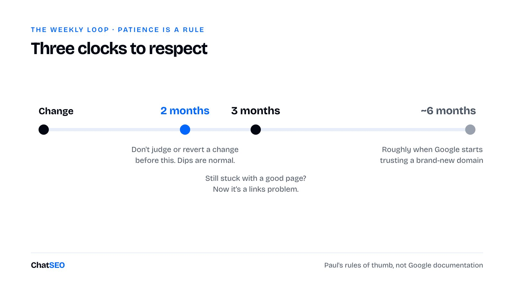
周一复盘：
---
name: weekly-seo
description: 基于 Search Console 的每周 SEO 复盘。每周一使用，或在被问到 SEO 进展如何时使用。
---
1. 向 ChatSEO（siteId）发送，逐字照发：
"Compare my last 28 days to the previous 28. Which pages gained
impressions, which lost clicks, and which keywords entered the
top 10?"
（把我最近 28 天与之前 28 天对比。哪些页面展示增加了、哪些点击减少了、哪些关键词进入了前 10？）
2. 点击减少的页面：检查是排名下降了还是 CTR 下降了。排名下降需要更好的页面；
排名不变而 CTR 下降，需要更好的标题，或者意味着现在有 AI 答案压在我们上方。
两者绝不用同一种修法。
3. 展示量猛增的页面刚刚进入前 10。把它们排进 page-brief 队列。
从前 10 到前 3 是最便宜的胜利。
4. 最近 60 天内编辑过的页面：标记为「等待」。不要动它们。
5. 90 天以上未编辑、仍在前 3 之外、且有好 brief 的页面：作为外链候选。
6. 写入 reviews/<date>.md，给我 5 个行动项，按业务价值排序，而不是按流量。Paul 自己的网站现在每周大约只花他十分钟。
每月第一个周一做 GEO 检查：重跑 geo-queries，与上个月对比，并检查你被列入的每一份第三方排名是否仍然列着你。然后手动、未登录地测试 10 条你的查询，记录是否被引用。
最后这一步刻意保持手动。Jacky 的团队在未登录状态下抓取 ChatGPT，因为 API 返回的来源与网页版不同。每月手动查 10 条是诚实的数据；基于 API 搭的仪表盘不是一回事。
用 Claude Code 里的 /schedule 把这两项设为例行任务，报告就会等着你。
最后，是你的 agent 在执行第一项任务之前就要写好的运行规则：
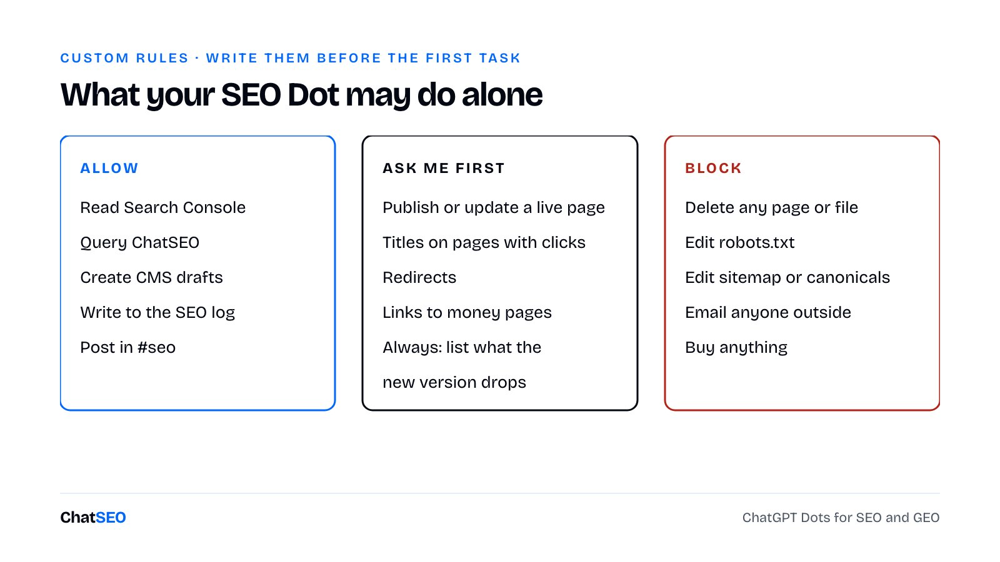
允许（ALLOW）
- 读取 Search Console、分析数据和 ChatSEO
- 创建草稿，写入 SEO 日志
需要我批准（REQUIRE MY APPROVAL）
- 发布页面，或更新线上页面
- 修改有点击的页面的标题
- 添加或修改重定向
禁止（BLOCK）
- 删除任何页面
- 编辑 robots.txt 或 canonical 标签
- 向公司外部发送任何邮件
- 购买任何东西每次你否决某样东西时，说明原因，并让 agent 把原因写进一个它每次起草前都会读的「SEO 标准」文件。
→ 这个文件会成为你的编辑方针，由你自己的每一次否决写成。它会比这个工具活得更久。
我可能错在哪里，或者只是运气好
我们起步时就有受众。Paul 是法国最知名的 SEO 之一，从 2021 年就开始做。代理公司会发邮件求进他的排名。我们的一些链接，是因为人们本来就知道这个名字。一个没有品牌的新域名，起步会比我们慢。
大部分方法不是我们的。凡是方法或数字出自 Jacky、Antoine、Axel 和 Daniel 的地方，都标明了他们的名字。Jacky 的数字是关于 ChatGPT 的法国数据，Gemini 和 Claude 的权重可能不同。
本地体系不是我们的案例。ChatSEO 不是本地商家。模块 10 是本地代理公司为客户执行的做法，重新搭建成由 Claude 来写。
我们挑的是容易的仗。我们的大多数模式都是低竞争查询。在一个新域名上去打商业型头部词，这套流程做出来的页面会排第 40 名。skill 修不了权威，它们只是确保你不浪费权威。
它会过时。扇出模式今年已经变过一次。在 Jacky 的数据里，Reddit 的引用占比几个月内变动了六倍。第四部分有些内容到明年春天就会是错的。
只有一家公司。我们的博客、Paul 的网站、少数几个客户。这是轶事，我宁可自己说出来，也不想在回复里被别人指出来。
我有信心能推广到其他情况的，是顺序。我没信心能推广的，是速度。
如果明天给我一个全新域名
- 把 Search Console 连接到 ChatSEO，在写任何页面之前先跑 money-keywords
- 修好已有的：砍、重新瞄准、重组
- 每个模式手工做一个参考页，用 page-brief 和 ship-page
- 写好模板和流程文件，然后每周发 2 页，一周都不落下
- 认领每一次未加链接的提及，然后每天给 5 个排在我想要链接位置的网站发邮件
- 发布我自己的盘点文章，一旦它们有了排名，就交换露出位置
- 第三个月开始做 geo-queries，那时才有值得引用的页面
- 每周一跑 weekly-seo，绝不碰过去 60 天内编辑过的页面
按这个顺序，因为每一步只有在前一步存在时才有效。
选「钱」。做得比前三名更好。赚取链接。让别人点你的名。等待。每周重复。
感谢阅读！
🎁 如果你想（免费）雇用你的第一位 AI SEO 员工，可以点这里（原文结尾的 ChatSEO 推广链接）。